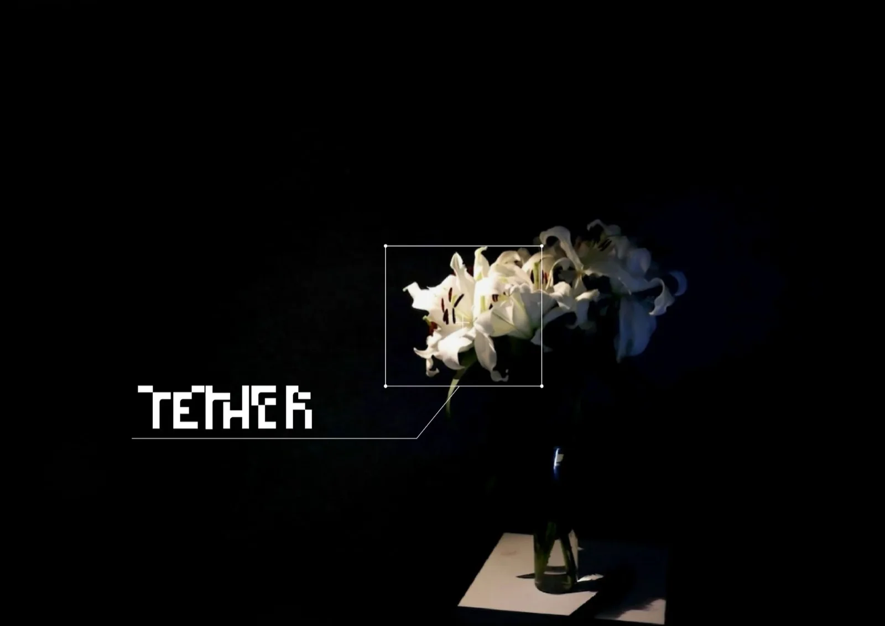
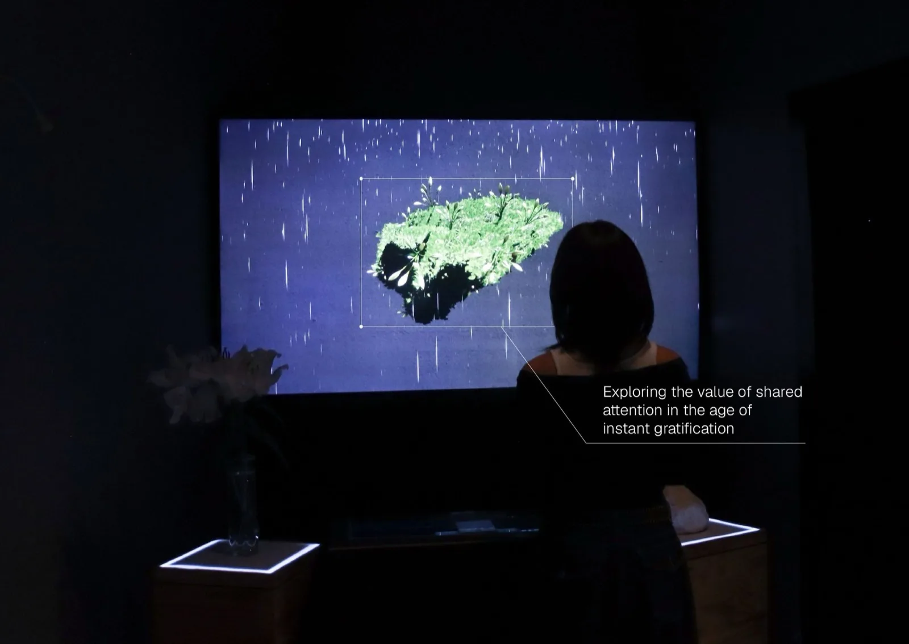
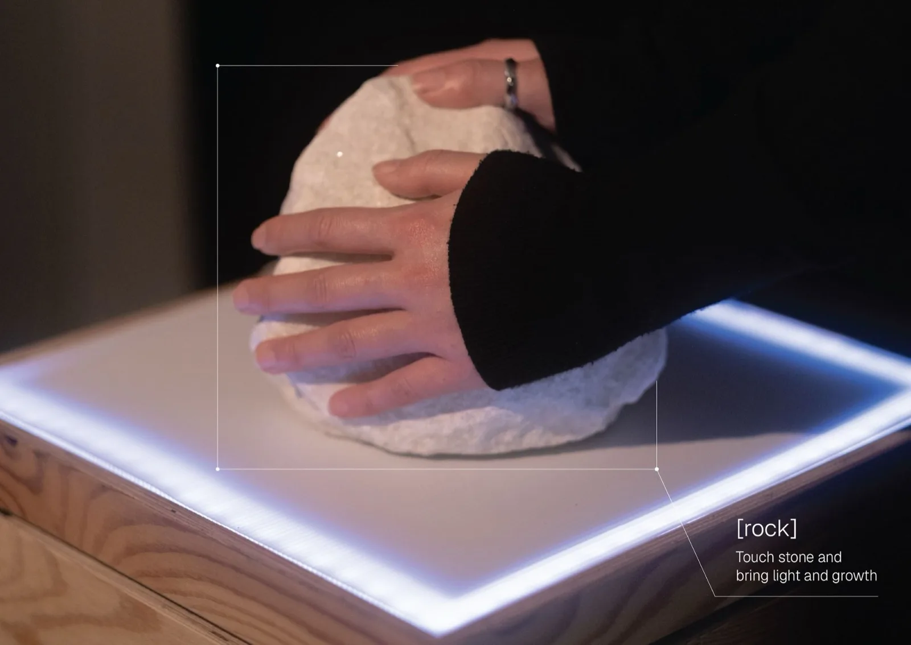
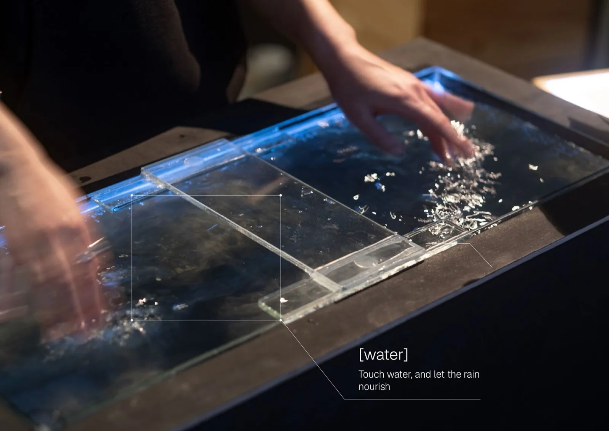
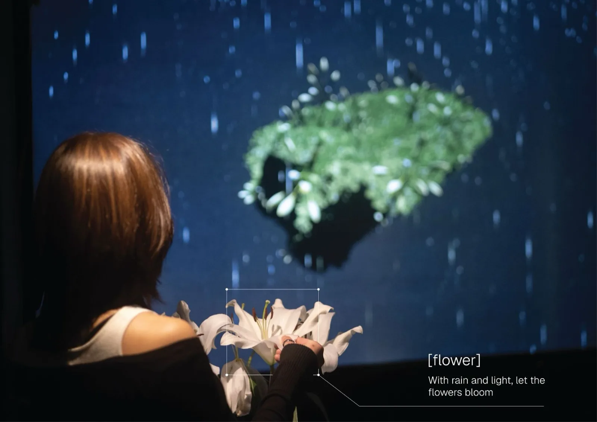
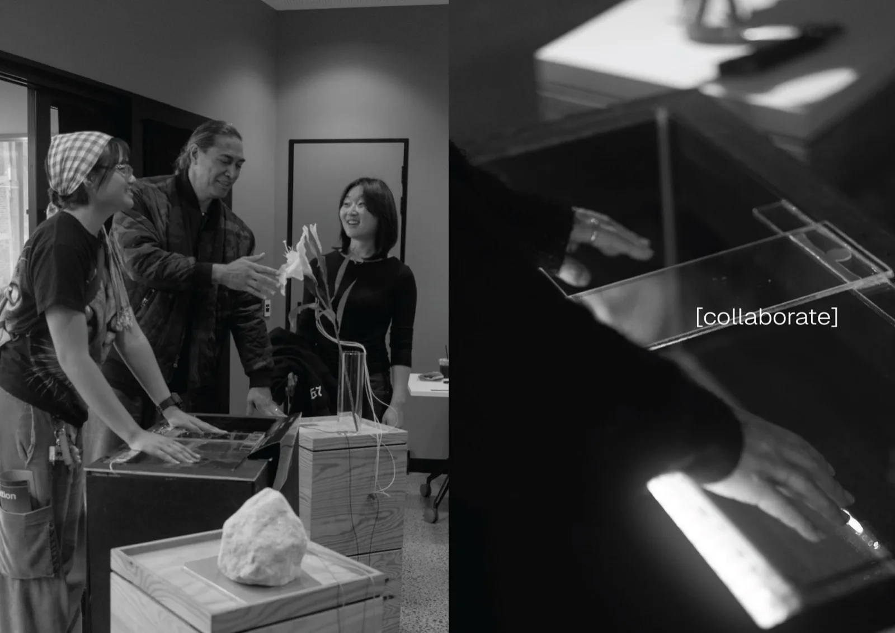
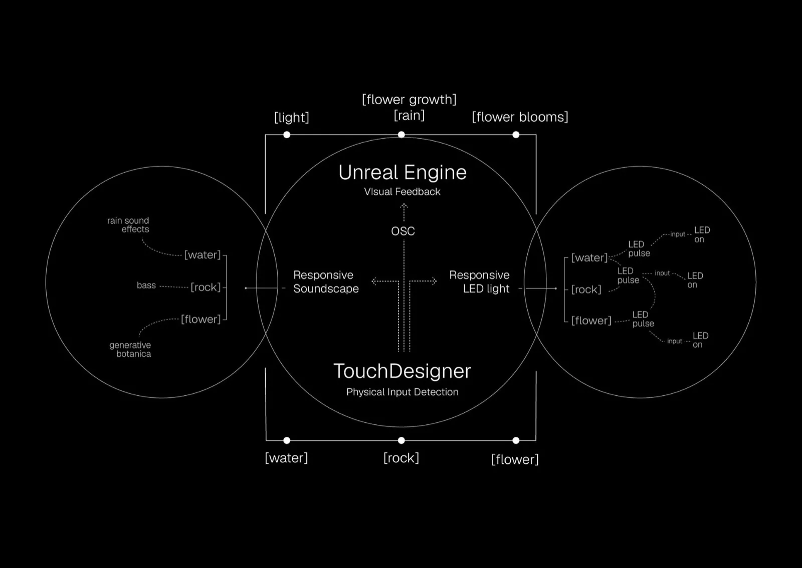
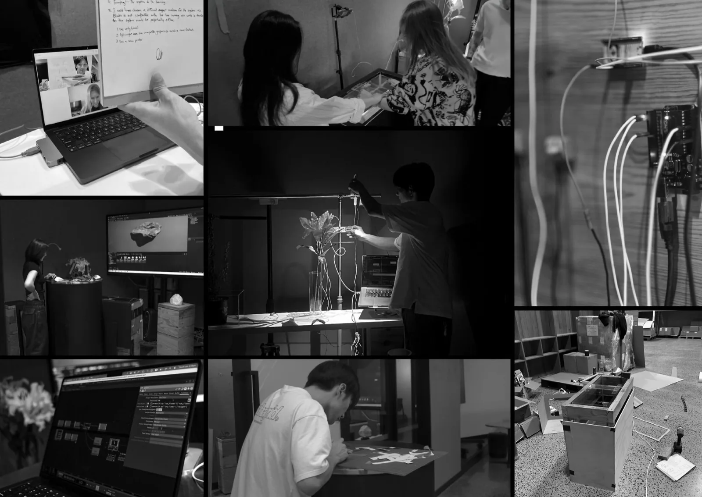
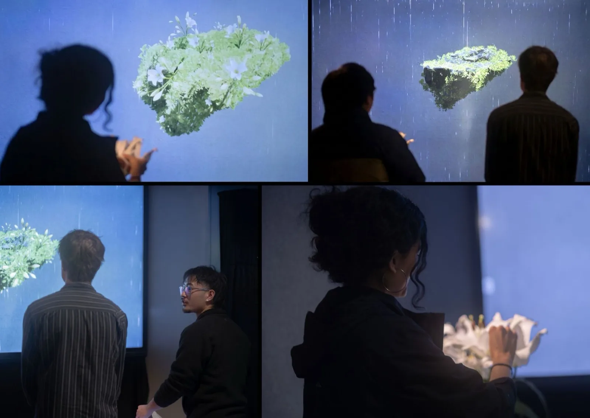

Tether
An immersive installation that transforms touch with natural materials into an interconnected world of light, sound and motion, inviting shared curiosity and playful exploration without a set goal or instruction.
01 — Idea
Exploring the value of shared attention in the age of instant gratification.


02 — Interaction
Three natural materials, no instructions. Each touch changes the world on screen.
[Rock] Touch stone and bring light and growth.
[Water] Touch water, and let the rain nourish.
[Flower] With rain and light, let the flowers bloom.




03 — System
TouchDesigner reads each touch and passes it to Unreal Engine over OSC.

Unreal Engine turns the signals into light, rain, growth and bloom. The same signals drive a soundscape (rain for water, bass for rock, generative botanica for flower) and LEDs under each material that pulse, then stay on as it’s touched.
04 — Behind the scenes


The soundscape patch in TouchDesigner: one audio layer per material, triggered by touch.